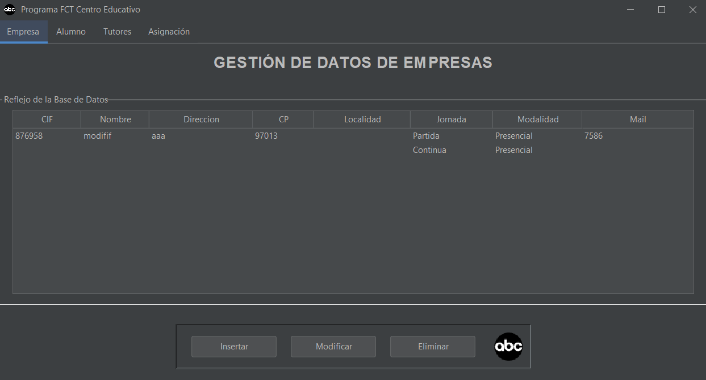
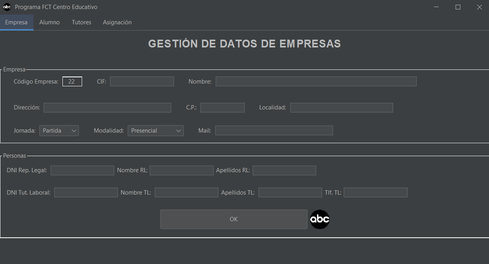

Aplicación de almacenamiento de datos para la gestión de una escuela.

En esta primera captura podemos ver el inicio de nuestra aplicación. Los botones ayudan a insertar datos en la BD y se verán reflejados en la tabla que pueden ver, sus funciones son:
Para que vean como funciona estos botones añadimos en la siguiente captura la vista de insercción de datos que se accionará tras pulsar los botones insertar o modificar.
